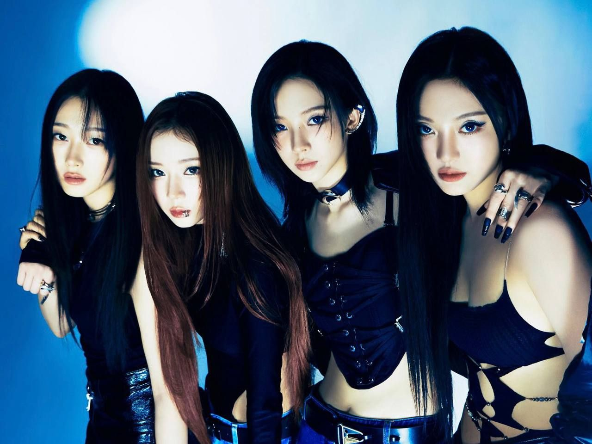

KPOP MUSIC
K-pop, short for Korean popular music, is a form of popular music originating in South Korea as part of South Korean culture
Definition from: Wikipedia
MY FAVORITE KPOP GROUPS
- New Jeans
- NewJeans is a South Korean girl group formed by ADOR. The group is composed of five members: Minji, Hanni, Danielle, Haerin, and Hyein. Mainly produced by Min Hee-jin, they are known for their 'girl next door' image and musical stylings reminiscent of the 1990s and 2000s.
Definition from: Wikipedia
Image from: IMDb
- Le Sserafim
- Le Sserafim is a South Korean girl group formed by Source Music. The group consists of five members: Sakura, Kim Chae-won, Huh Yun-jin, Kazuha, and Hong Eun-chae. Originally a sextet, Kim Ga-ram left on July 20, 2022, following the termination of her exclusive contract.
Definition from: Wikipedia
Image from: soompi
- Aespa
- Aespa is a South Korean girl group formed by SM Entertainment. The group consists of four members: Karina, Giselle, Winter, and Ningning. The group is known for popularizing the metaverse concept and hyperpop music in K-pop.

Definition from: Wikipedia
Image from: abs-cbn